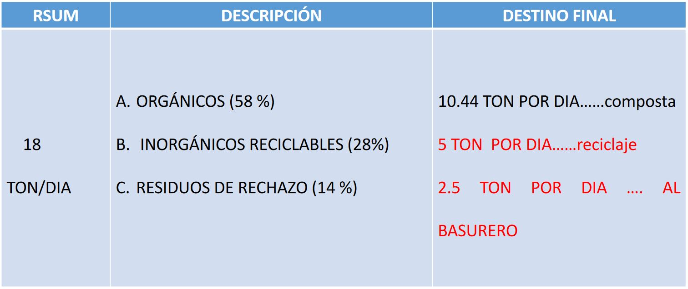

Construcción de obras de captación, retención de agua de los
Ríos principales de la comunidad y cosecha de agua de lluvia.
Se dispone de infraestructura de canales de riego de aprox 15
kilómetros que derivan agua del rio valiente y el rio seco. Servirán para
surtir de agua a las obras de almacenamiento.
Esta ruta partirá del mercado gastronómico, que se esta construyendo enfrente del exconvento dominico del Siglo XVI, en el Centro
de la población. De ahí, se les dará información a los turistas sobre la ruta ecoturística, acerca de lo que ellos van a ver a lo largo de
todo el trayecto.
LUGARES UBICADOS EN EL AREA COMUNAL.: Estación A. Vivero. Se propone la construcción de una galera, Estación B. Punto Trino.
Construcción de una cabañita, Estación C. Construcción de una cabañita, Estación D. Galera en paraje “Corral de Piedra
